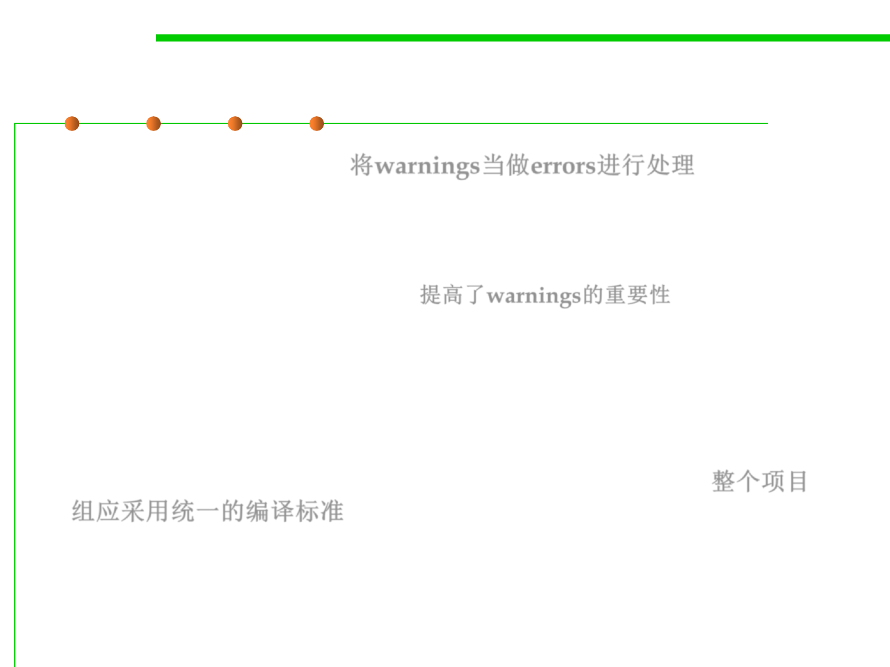

Compiler Warning Messages
7.4 Debugging
▪ Treat warnings as errors 将warnings当做errors进行处理
– Some compilers let you treat warnings as errors.
– One reason to use the feature is that it elevates the apparent importance of
a warning. Setting your compiler to treat warnings as errors tricks you
into taking them more seriously. 提高了warnings的重要性
– Another reason is that they often affect how your program compiles.
When you compile and link a program, warnings typically won’t stop the
program from linking but errors typically will. If you want to check
warnings before you link, set the compiler switch that treats warnings as
errors.
▪ Initiate project wide standards for compile-time settings 整个项目
组应采用统一的编译标准
– Set a standard that requires everyone on your team to compile code using
the same compiler settings. Otherwise, when you try to integrate code
compiled by different people with different settings, you’ll get a flood of
error messages and an integration nightmare.